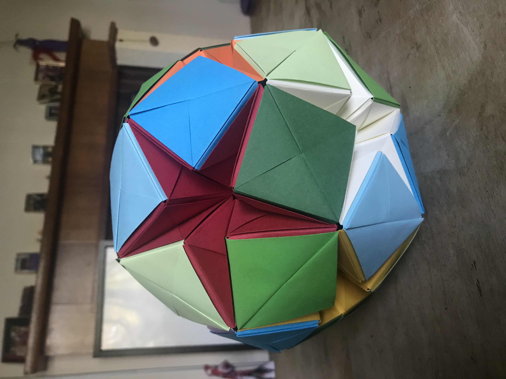
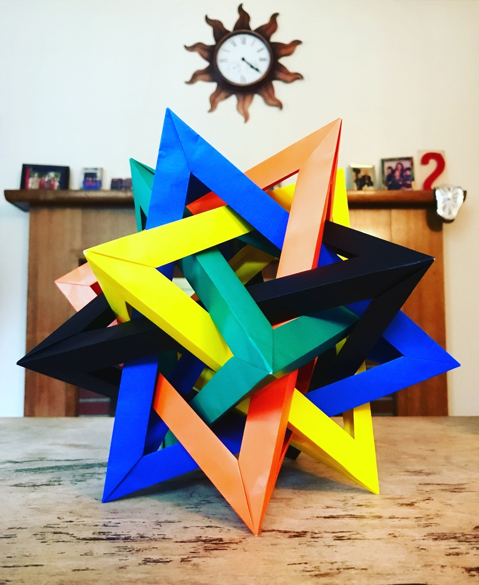
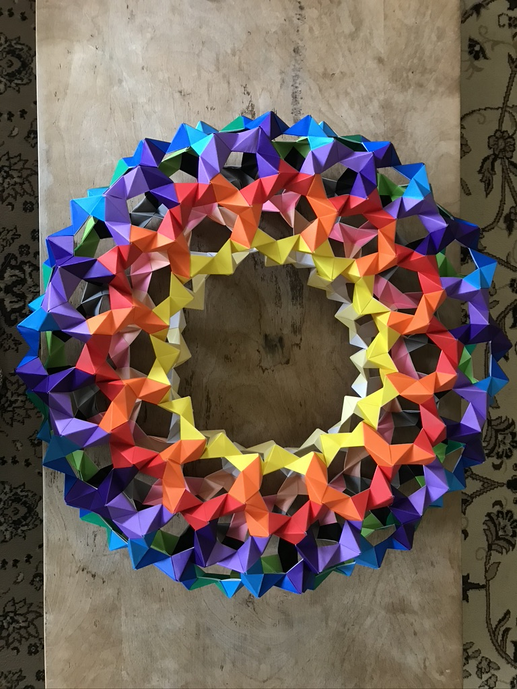
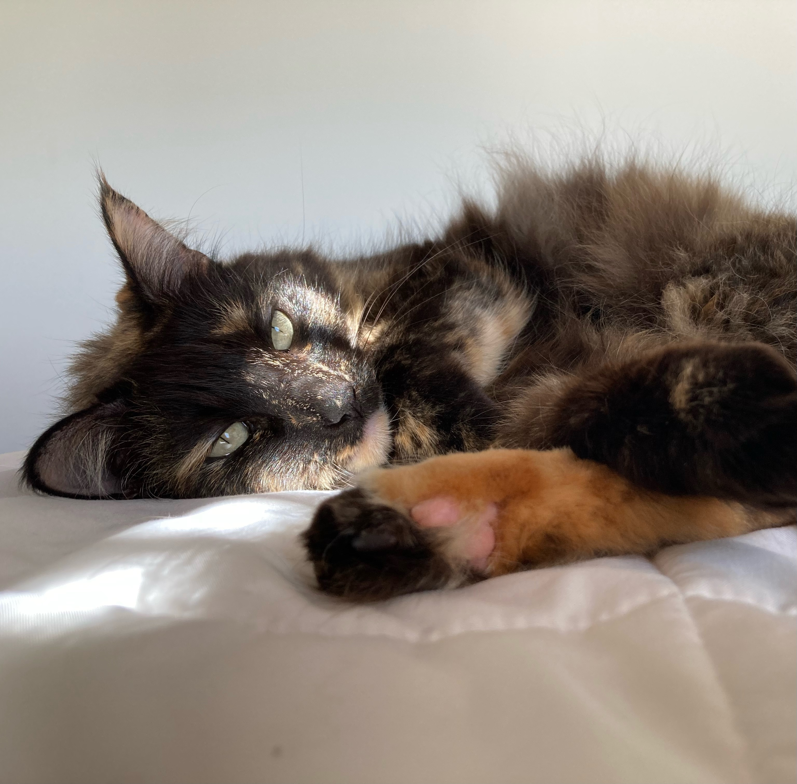

Outside of mathematics, I enjoy spending time with friends and lounging at home with my kitties. Right now one of my favorite evening activities is working on a jigsaw puzzle with my partner while we listen to music/podcasts or watch a movie. We've also done a handful of modular origami projects together, a few examples are pictured below.
  
I also enjoy board games (though I mostly just play online Dominion with friends nowadays), reading novels, and watching shows. All of these activities usually involve having one of my two cats on my lap, pictures below.
